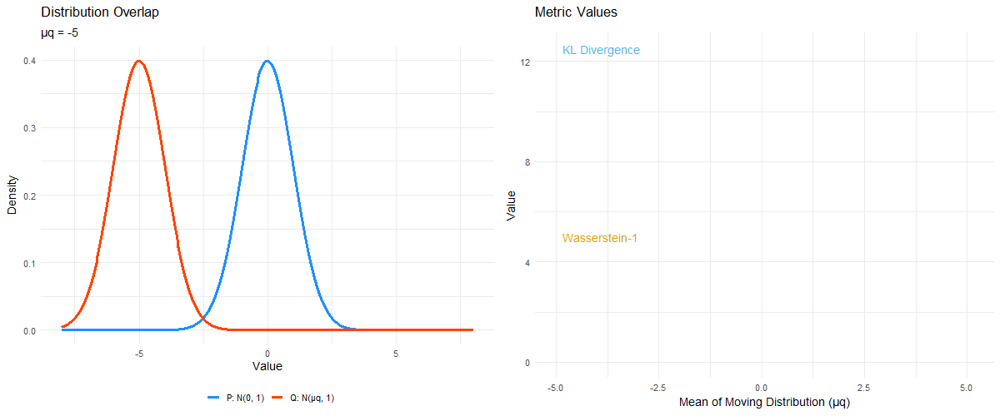

About Me
Welcome to my homepage! My name is Ben and I am a Ph.D. student in the Intelligent Systems Program at the University of Pittsburgh School of Computing and Information, advised by Dr. Amin Rahimian. I am a Graduate Student Researcher in the Sociotechnical Systems Lab.
I hold an M.S. in Biostatistics (Health Data Science) from the University of Pittsburgh School of Public Health and a B.S. in Neuroscience/Psychology from the University of Rochester. My background bridges the gap between biological systems, statistics, and computational intelligence.
Most recently, I have worked as a Multi-Agent Systems Research Intern at the Honda Research Institute and as a Research Intern with the AI-READI Consortium (NIH). You can access my resume here.
Scientific Research
My research uses computational, statistical, and topological techniques to model complex systems, from public health dynamics to the geometry of latent spaces in AI. Here's a glimpse of some of my work:
- Topological Perspectives on AI Efficiency: Moving beyond linear interventions in Large Language Models (LLMs) by exploring the differential topology of activation manifolds. Can we "steer" models more efficiently by respecting the geometry of their latent space?
- Mechanistic Interpretability for Biomarker Discovery: Adapting "hypothesis triage" frameworks to foundation models in healthcare. I am currently using Sparse Autoencoders (SAEs) to decompose the latent space of retinal imaging models, aiming to distill "black box" representations into clinically interpretable biomarkers for metabolic disease.
- Multi-Agent Systems (MAS): Investigating the "Specialist's Dilemma" and how rigid specialization creates system-level bottlenecks in ad-hoc collaboration.
- Epidemic Modeling: Developing national-scale stochastic reaction-diffusion models (e.g., SEIRV) of contagion and stopping rules + evaluation metrics for Monte Carlo simulations.
- Data Privacy & Ethics: Evaluating privacy-enhancing technologies (PETs) and the alignment of data access requests with licensing terms in large-scale medical datasets.
Selected Recent Publications
You can find a full list of my scientific publications on my Google Scholar Page.
Virtual Exploratorium
I use visualizations to build intuition for interesting mathematical concepts. Translating abstract concepts into dynamic geometry makes their meaning far more tangible.
Wasserstein vs. KL Divergence: This animation visualizes the relationship between the Wasserstein-1 distance and Kullback-Leibler (KL) Divergence for two normal distributions as their means diverge. It highlights why Wasserstein is often a more robust metric for distributions with non-overlapping support—a key concept in my work on simulation stopping rules.
Variance Inflation in Linear Models: In a linear regression model, correlated inputs (multicollinearity) inflate beta coefficient variance, distorting the perceived impact of inputs on the outcome.

Gyroid: This is a gyroid, a triply periodic minimal surface (TPMS) that divides space into two congruent, interpenetrating labyrinths. The animation visualizes the surface defined by the trigonometric approximation $\sin(x)\cos(y) + \sin(y)\cos(z) + \sin(z)\cos(x) = t$.
The "morphing" effect demonstrates the topology's evolution as the level set parameter ($t$) cycles between approximately -1.4 and 1.4. At $t=0$, the channels have equal volume; as the value shifts toward the extremes, one labyrinth expands while the other contracts, illustrating the surface's continuous deformation before the channels pinch off.
Bookshelf & Resources
A collection of resources that have influenced my thinking:
- teachyourselfcs.com – Essential roadmap for CS fundamentals.
- The Road to Reality by Roger Penrose – A comprehensive guide to the physical universe and its mathematical underpinnings.
- Benchmarks as Microscopes: A Call for Model Metrology – On the importance of rigorous measurement in AI evaluation.
- Recent readings on Persistent Homology and the Geometry of Embeddings (e.g., the "Shared Global and Local Geometry" papers from CoLM).
Links
- A Musician's Guide to Chromatic Intervals – A resource born from my interest in music theory and composition.